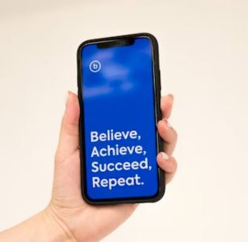

De-Stress
Don't Stress!


Anxiety can revolve around a person. It can consume the very essence and drag your thoughts to places it’s never wanted to imagine.
A monitor that understands your thoughts and brings you back to reality.

An app on your phone. It takes in data on your anxiety, stress, and all sorts of emotions and solutions that you’ve implemented that work. Strategies you’ve used before. Solutions for the time being. Allow it to analyze your personal data such as responses and daily living to understand your response to symptoms such as stress and anxiety.
A simple breathing technique, meditation, and quotes that helps calm you down or cheer you up when you're upset. Be it sad or stressed, this app can accommodate your needs. All you must do is let it know. A simple press of a button.
Car Facial Monitor

Fatigued
Tired
Sleeplessness

Driving alone after a long day. Worried about falling asleep? Using Facial Emotion Recognition (FER) technology, it scans your facial emotions and alarms you when you look fatigued.
It turns on something funny, something interesting to listen to, keeping you awake. When you appear tired and seem like you’re falling asleep it analyses your facial emotions and sends an alarm, waking you up.
While your phone is facing your direction, this app scans your face for facial recognition and analyses the expressions to find the best solution.
With FER technology, the possibilities are endless. This technology could enhance fields such as education, law, crime, healthcare, employment etc.
Credits
https://img.craiyon.com/2023-08-15/4c0dcd667d664006a16af06dd67076cf23f9a4a3.webp
https://images.pexels.com/photos/312839/pexels-photo-312839.jpeg?auto=compress&cs=tinysrgb&w=1260&h=750&dpr=2
https://images.unsplash.com/photo-1617994452722-4145e196248b?ixlib=rb-4.0.3&ixid=M3wxMjA3fDB8MHxwaG90by1wYWdlfHx8fGVufDB8fHx8fA%3D%3D&auto=format&fit=crop&w=870&q=80
https://images.unsplash.com/photo-1559650656-5d1d361ad10e?ixlib=rb-4.0.3&ixid=M3wxMjA3fDB8MHxwaG90by1wYWdlfHx8fGVufDB8fHx8fA%3D%3D&auto=format&fit=crop&w=348&q=80
https://images.unsplash.com/photo-1597328290883-50c5787b7c7e?ixlib=rb-4.0.3&ixid=M3wxMjA3fDB8MHxwaG90by1wYWdlfHx8fGVufDB8fHx8fA%3D%3D&auto=format&fit=crop&w=870&q=80
https://images.pexels.com/photos/11985979/pexels-photo-11985979.jpeg?auto=compress&cs=tinysrgb&w=1260&h=750&dpr=2
https://img.craiyon.com/2023-08-15/58ec201a147e460682f4d575d63953b3268bdc72.webp
https://images.unsplash.com/photo-1582391240849-56f8afba6679?ixlib=rb-4.0.3&ixid=M3wxMjA3fDB8MHxwaG90by1wYWdlfHx8fGVufDB8fHx8fA%3D%3D&auto=format&fit=crop&w=870&q=80
https://images.pexels.com/photos/5126931/pexels-photo-5126931.jpeg?auto=compress&cs=tinysrgb&w=1260&h=750&dpr=2
https://images.pexels.com/photos/1386649/pexels-photo-1386649.jpeg?auto=compress&cs=tinysrgb&w=1260&h=750&dpr=2
https://images.unsplash.com/photo-1516733968668-dbdce39c4651?ixlib=rb-4.0.3&ixid=M3wxMjA3fDB8MHxwaG90by1wYWdlfHx8fGVufDB8fHx8fA%3D%3D&auto=format&fit=crop&w=928&q=80